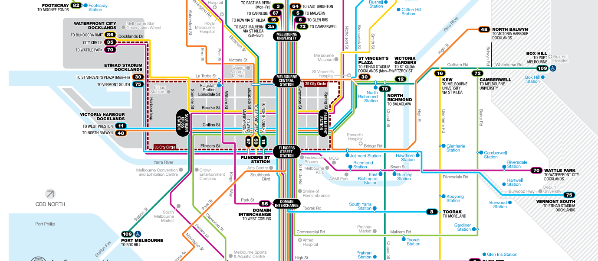

Buy a Myki smartcard for flexible travel between trains, trams and buses. You'll be able to use public transport in and around the city for just a few hours or all day.
Plan your trip, buy or top up your Myki card online and download maps and timetables from Public Transport Victoria, the one-stop shop for information about travelling on public transport (phone 1800 800 007).
Running since 1 January 2016, Melbourne's Night Network trial has provided 24 hour public transport on weekends with all night trains and trams, late night buses, and a 2am coach service to key regional centres.
The City Circle Tram is a free service around central Melbourne taking passengers past some of Melbourne's major attractions. Visit Free City Loop Tram for a route map.
There are many designated taxi ranks across the central city. See the
map
for locations.
Here is a navigation map.